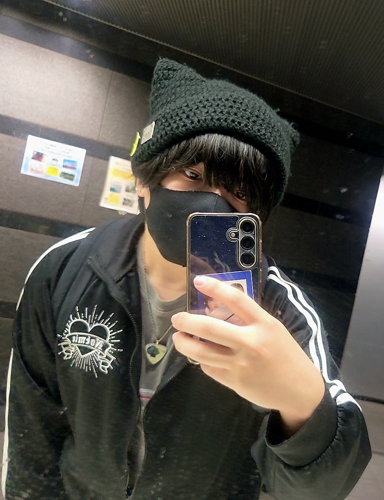

こんにちは、ザクザク食感です。
ダンガンロンパにハマった。
なんでこんなに面白いゲームを今までやっていなかったんだ
※この記事にはダンガンロンパシリーズのネタバレが大いに含まれるので、根幹にかかわる部分は白文字にしてあります。既プレイの人は文字を長押しして反転文字にして読んでください。
未プレイの人はゲーム史に残る大傑作のネタバレを食らっていない超高校級の幸運の持ち主なので、今すぐダンガンロンパを買って遊んでください。
特にダンガンロンパ2は実況で見るのももったいないレベルで完成されたゲームなので、マジで自分の手でやってください。
まのさばをやった後、これが好きなんだったらダンロンもやった方がいいと言われてなんとなく始めた。
まのさばがヘイト管理がしっかりしていて最終的にみんな好きになるようなストーリだった（それでも僕は蓮見レイアが嫌い）分、ダンロンは嫌な奴がマジで嫌な奴だったので、まずそこに驚いた。
主人公の苗木君だけはマジでいい奴 「みんなの死を乗り越えなんてしない、引きずりながら前に進むんだ」って言ってた時点であっ希望すぎて好き……（狛枝）になった。だけど、他のメンバーは協調性がないしずっとギスギスしている。まのさばと違ってバレずに殺人できれば脱出できるし、殺人衝動も魔女化によるものとかでもなく純粋な欲望によって起きるから、より趣味の悪いストーリーで僕好みだった。
学園に残るバッドエンドで子供が生まれてるのとかマジで絶望的に絶望でよかった。
舞園さんは計画通りに殺せていればたぶん苗木君に全部擦り付けていただろうし、大和田も大した理由なく苗木君ぶん殴ったから絶対許せない、それを慕っている石丸清多夏もおかしい（石丸が一番嫌い 僕って委員長キャラが好きじゃないのか？ 星見純那は大好きだから体裁のために仕切ろうとするキャラが許せないのかも）し、大神さくらを信じなかった腐川も葉隠も許せない。
でも、霧切さんは途中まで「お前が反論しろよ！！！」と思ってたけど戦刃の事件以降大好きになったし、十神も不二咲さんの死体を偽装するし御曹司の才能をギスギスさせる方に使ってて嫌いだったけど終盤に向けて覚悟が決まっていくのがかっこよくて好きになった。
よくできた作品だ……
あと最後の裁判があまりにアツい。
えのじゅんが黒幕なことに全く気付けなかったのに、初めて出会った瞬間から伏線が張ってあったし、苗木君が超高校級の希望になるところとかもアツすぎて声が出た。
これはとんでもないゲームに出会ってしまった……と思ってクリア後速攻でダンロン2を買った。人生がダンロン2をやる前と後に分かれるくらい面白かった。
まず狛枝凪斗とかいうキャラクターがやばすぎる
- 顔がいい
- 名前が前作主人公のアナグラム （苗木誠だ→なえぎまことだ→こまえだなぎと→狛枝凪斗）
- 能力が前作主人公と同じ
- 声優が緒方恵美で前作主人公と同じ
- 決め台詞が前作主人公と同じ
- めちゃくちゃ強いうえに敵か味方かわからない
- 狂った思想の芯があってブレない
好きな要素しかない！！！！！
幸運の才能 というか自分の才能（能力）をここまで使いこなしているキャラを他に知らない。苗木君と同じ能力なのに使い方が全く違うのがたまらん。オタクは同じ能力でも使う人によって違う戦い方になるのが大好き
第四章から第五章がすごすぎる。
ファイナルデッドルームの狛枝のロシアンルーレットがかっこよすぎる。自分じゃなくて自分の才能を完全に信じているのがかっこいい。脱出ゲームに慣れてるのもかっこいい。
第五章以上に完璧なトリックを知らないし、これから出会える気もしない。
他殺に見せかけた自殺に見せかけた他殺
に見せかけた裏切り者の炙り出しってなんだよ！！！
狛枝の悪意（悪意でもないんだけど）と才能を日向たちが信用しているからこそ真相にたどり着けるっていうのもいい
ダンロン1のキャラはみんなうっすら嫌いだったけど、ダンロン2のキャラはみんな好きかもしれない。
ただ、
最初は九頭龍がガチで許せなかった。ずっとこいつだけ協力しなさすぎだろ！と思ったら不確定な情報に踊らされて、しかも自分の手を汚さずに、しかも僕が好きだった小泉真昼を殺したしマジで許せなかった。そのうえでみんな謎に九頭龍に肩入れしてて、こいつら正気かよ！？と思った。単独行動してたんだからまだ関係値もなくない？西園寺だけが正常だった。
あと強いて言うなら生き残り組がちょっとキャラ薄いか……？
いや！！！！！
！
死んでいったメンバーのキャラが濃すぎるだけよ まともなメンバーが生き残ったと考える方が妥当ね（超高校級の探偵）
最終章も良すぎる 推理ものとしてのクライマックスに到達したあとに物語としてもクライマックスに到達する話の構成が素晴らしい。
苗木君が来たとき声出た 過半数の得票を得るために二人足りない……ってなったときにまさか…！？と思ったら霧切さんと十神が来るのもアツすぎる その上で日向と七海のおかげで活路が開けるのもちゃんと主人公してて最高
ずっと事実を並べて最高って言ってるだけだな
ダンロンが素晴らしいのは、悪趣味で残酷な話なのに最終的には人間讃歌になるのがすごく良い。
絶望しかない未来でも希望を抱き続ける決意をした苗木君は最高にかっこいい。最高に主人公だった。主人公の器っていう才能があった。
それを踏まえてお出しされた続編のメッセージが、「才能がなくてもいい」なのが本当に……最高や……（まあ3のオチまで見ると神座パワーありきみたいなところもあるけど、あくまで才能なしの予備学科だった日向がみんなとの出会いを通して未来を創るって答えにたどり着いたところに本質があるよね）
最高のゲーム体験を終えて、もうどっぷりダンロンにハマってしまった。
続編のV3か絶対絶望少女をやろうと思ったけど、その前にダンロン3（アニメ）を見た。
このアニメは特殊で、ダンロン1の後が描かれる未来編と、ダンロン2の過去が描かれる絶望編があって、それを1話ずつ交互に見ていく構成になっている。
ネットではかなり賛否両論（否より）みたいだけど、僕は好きだった。
まあたしかにいろいろ言われているだけあって、不満とか疑問を挙げたらキリがない。
未来編はダンガンロンパなのに学級裁判がなくてシンプルな殺し合いなのはちょっと残念だし、朝比奈が殺されたかもみたいな引きが展開に全く関係なかったし、葉隠が一生ウロチョロしてるだけなのもなんだこいつってなった。でもこれら全部が気にならなくなるくらい、天願はマジでなに！！？！？！？！？ ついやってしまったよ（笑）じゃないんだよドナルドか？動機がわからん 絶望ビデオのせいでああなってたってことでいいよね？だとしたら御手洗に希望ビデオを使わせようとしたのはなんだったんだ……？とかいろいろ思うことはある。でも禁止行動を知られずに脱出を目指すっていうのは面白かったし、黄桜はかっこよかったからヨシ
絶望編はえのじゅんが出て話が動き出した以降がなんかな～ではあった。あのホモはガチで何をされてる方なの？？？ホモバレが怖くてえのじゅんをクロ報告できなかったせいで超高校級の絶望が完成したと言っても過言ではないだろ 誤解のないように言っておくと僕がダンロン3で一番好きなのはあのホモ（逆蔵十三）です。
あと、えのじゅんには77期生を一人一人絶望に染めていってほしかった。ダンロン3全体を通して御手洗の才能が強すぎるのは肩透かしを食らった感があった。雪染先生も仕方ないんだけど絶望に染まってからが嫌なキャラすぎた。あと最終話（希望編）も納得いってない。結局神座パワーで77期生はみんな生き返ってるし、御手洗を止めに行くのが日向なのは、ん～？ってなった。予備学科クンと引きこもってた御手洗って全く面識なくないか？そもそもリアル御手洗ってえのじゅんと組んで以降しかみんなに会ったことなくないか？あの場で御手洗を止めに行けるのは超高校級の詐欺師だけだっただろと思う。まあ関係値とかなしにクラスメイトだから助けるのがかっこいいか
いろいろ書いたけど、日向と七海が最後に話せて、なぜ更生プログラムに七海がいたのかがわかったシーンだけで不満の那由他倍のお釣りが来たと思う。普通に泣いた。
あとえのじゅんが繰り返し言っていたように、「希望は予定調和、絶望は混沌」 これを体現する作品だったなと思う。神座日向って予定調和の極みみたいな存在だし、そう思うとすべてスッと頭に入ってくる。
いい作品だったと思う。あと絶望編のOPの「カミイロアワセ」が良すぎる。やなぎなぎって天才や
あと舞台のダンロンとダンガンロンパ2.5を極悪違法視聴したけどその話はまた気が向いたらします。
ダンロンV3は今やっていて、3章の裁判まで進んだ。ゲームシステムが進化していて圧倒的に遊びやすい。でもマリカーとかカセキホリダーはなんなんだ 謎のミニゲーム要素が毎回入ってくるけどそれもまた味なんだろう。
現状ハルマキが好きだけどそろそろ死にそうで怖い。最原くんもかなり好き ダンロンの主人公ってちゃんと年頃の男の子なんだなって描写がある（風呂覗き・男のロマン砲イベント）から好感が持てる。RTA走者がミスしていたら安心するのに近い気がする。
ダンロンV3をやって、絶対絶望少女をやったらノベル版を買いあさる旅に出ようと思います。一旦感想を吐き出さないとパンクしそうだったので、がーっと書いて落ち着いた。
雑記
ここひと月くらい不眠と過眠がループしていた。
そもそも規則正しく生きている方ではないのであまり気にしていなかったが、起き上がる気力が出なくてダンロンV3のスロットを連射コンで放置して土日全部寝る（おかげてメダルが20万枚になっていた）というわけわからん過ごし方をしてしまったことで、「これ3年前に戻ってる！」と気づいた。
実は2か月くらい精神薬と眠剤を断っていた。
理由は副作用に怯えるのが嫌だったのと、「もう躁鬱がどうとかのフェーズにいなくないか？」と思う機会が増えて、完治したと思い込んでしまったことだ。
環境から来るストレスが原因で心を病んでいたと思っていたので、それがなくなった今、もう薬飲む必要ないじゃん！と思っていた。寛解とかじゃないと本気で思っていた。
実際なんの支障もなく生活できていたが、ストレスがない故に全く言語化できない不安や不快感を感じることがあった。でも説明ができないから心のダメージに気づけない。
主に秋の肌寒さ！！！日本の九月の気層です！！！ 秋口の肌寒さってなんであんなに死にたくなるんだろう
でもそれを無視していたらだんだん生活リズムがおかしくなっていって、無気力になっていって、今に至る。
さすがに土日全部寝た件で自分の異常さに気づいて、服薬を再開した。
すこぶる調子がいい！！！ ラツーダ（双極性障害の薬）は2週間ぐらいかけて効くものらしいのでそれのせいではなく、デエビゴ（眠剤）による強制就寝が大きいのだと思う。
やはり睡眠 睡眠はすべてを解決する
みんなも寝よう！今なら睡眠が無料！
それで済めばよかったのだが、今週頭にヘルニアの再発と風邪が同時に来て完全に終わった。
風邪に関しては10月頭からずっとなんとなく体調が悪かったので、あ～という感じだった。季節の変わり目は心だけでなく普通に体調も崩すのでマジでよくない。でも特有の儚さみたいなものがあって嫌いになりきれない デストルドー（デス系の最上位呪文）
問題なのはヘルニアだ。2か月前くらいに足がまともに動くようになって痛みもほぼでなくなったので通院もやめていいとまで言われて、完治したと思っていた。
ヘルニアは、完治しない！！！！！寛解とかじゃないと本気で思っていた。
なんで僕は齢24にして完治しない病気を二つも抱えてるんだ もう（少なくともこれを書いている今は）全然死にたくないのに長生きできるタイプではなさそうで泣く。あんなに死にたがってたのにまだ生きててかわいそう……と上位存在から施しを受けたんだろう
僕のヘルニアは座ってると右下半身に痛みと痺れが来るタイプなので、職種や趣味と相性が悪すぎる。
せっかくアカシジア（えぐい副作用）で最悪の感覚を覚えるリスクを取ってラツーダで鬱を消しても、得た行動値を実行に移せない。ダンロンがしたくても座ることへの恐怖が勝って、ショート動画でイタリア料理の解説を見ることに時間を使ってしまう。結果無気力が体に染みついてくる。
あと日課だったチャリを漕げないから永遠に太り続ける！！！！！マジで太っていてやばい！！！！！
一番活動できていた去年の5月はベルトを最後の穴まで閉めないとズボンが落ちてきそうだったのに、今はベルトをする余裕すらない。
マジで助けて……
太るとおしゃれする気力とかもなくなるので、どんどん見た目への頓着がなくなっていく。
前は用事で外に出るときは化粧していたのに、それすらしなくなった。
先週、M3のために外出する機会があった。虫の知らせでなんとなく化粧した方がいいと思ったので久しぶりに化粧をした。
義務感でやったので楽しいものではなかったが、肌が綺麗になるだけでもだいぶ変わるので化粧ってした方がいい。
で、外出したら応援しているkabanaguさんとなぜか長時間話すことになり、それきっかけでまりいさんとも知り合えてお友達も増えた（僕はフォロワーを勝手に友達だと思っている）ので、最低限人に会うための恰好をしておいてよかった。
その件で僕の得意でない角度の写真をツイートしたので投稿しなかったが、久しぶりに外にでたので自撮りをした。

太っても自撮りをなんとかする方法は、ジャージを着ることとフェイスラインを隠すことだ。
僕はこれさえすれば正面からの写真は耐える。でも今がデッドラインだと思う。M3会場でお会いしたフォロワーは写真を見て驚愕していると思う。もうマジでこれ以上太りたくない。頑張ります。
雑記でした みんな希望を持って生きよう 病気には気を付けよう ダンガンロンパはやろう
それでは、さようなら。